Boutique · Prato
Calzature, borse e accessori scelti a mano.
Un'eleganza che si nota senza alzare la voce.
La boutique
Da Keily Costa ogni pezzo entra in negozio perché è stato scelto: calzature, borse, abbigliamento e accessori donna, raccolti con un'idea precisa di stile. Nel cuore di Prato, in Viale Montegrappa 194, una boutique pensata come un piccolo atelier — dove farsi consigliare conta quanto ciò che si compra.
In vetrina ora
Le ultime selezioni della stagione, appena entrate in boutique.
La collezione
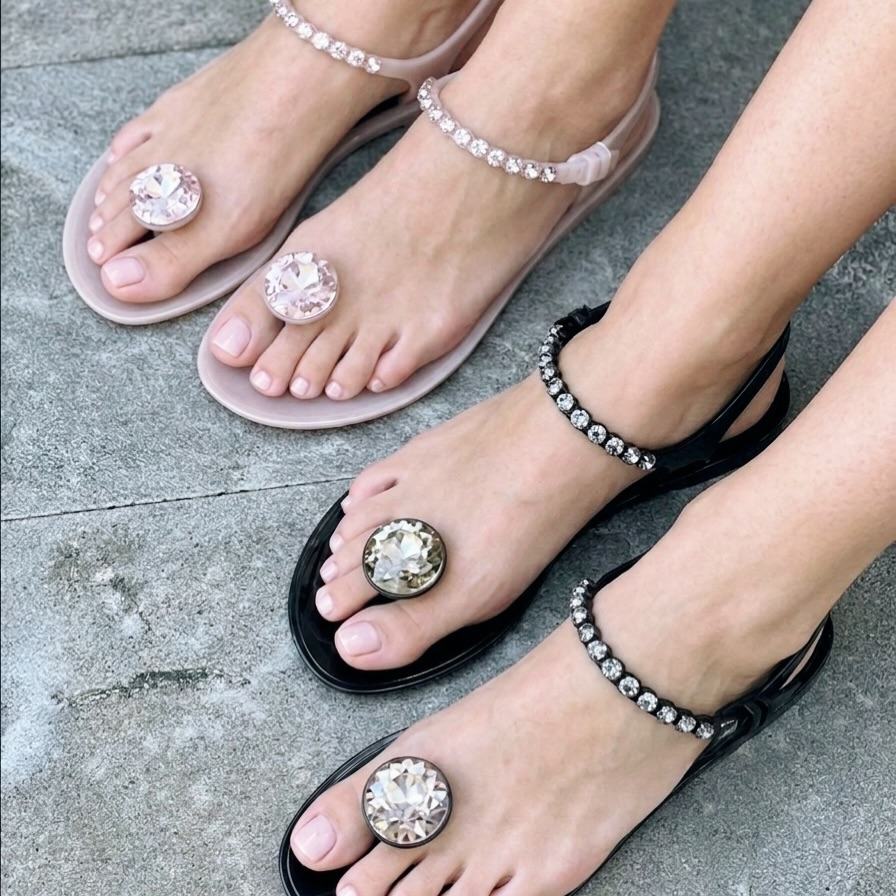
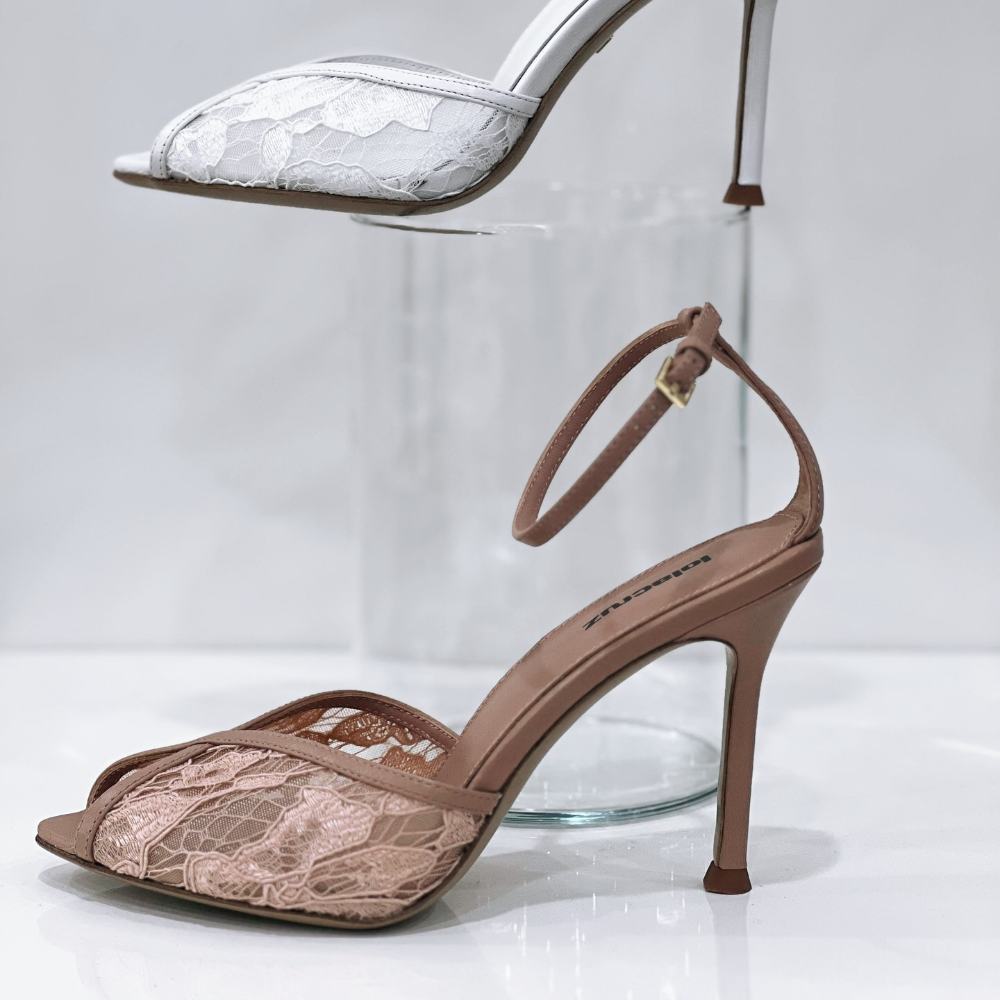
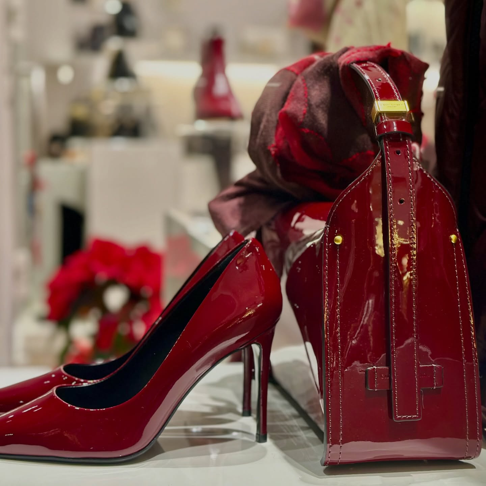
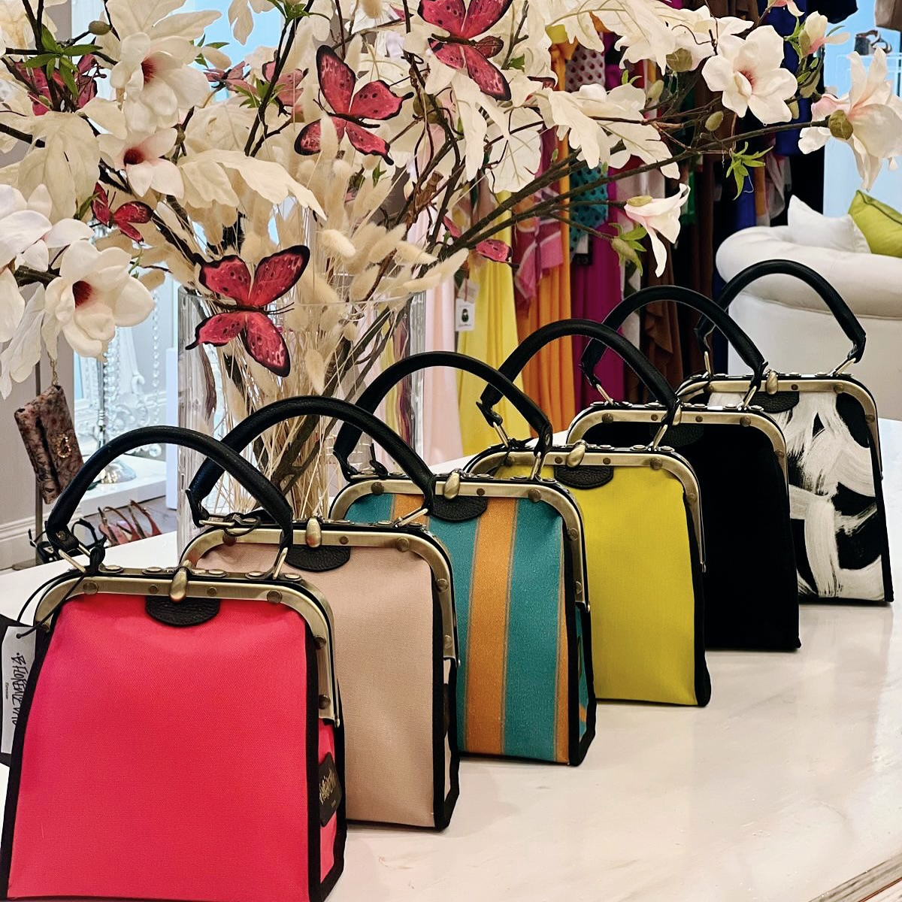
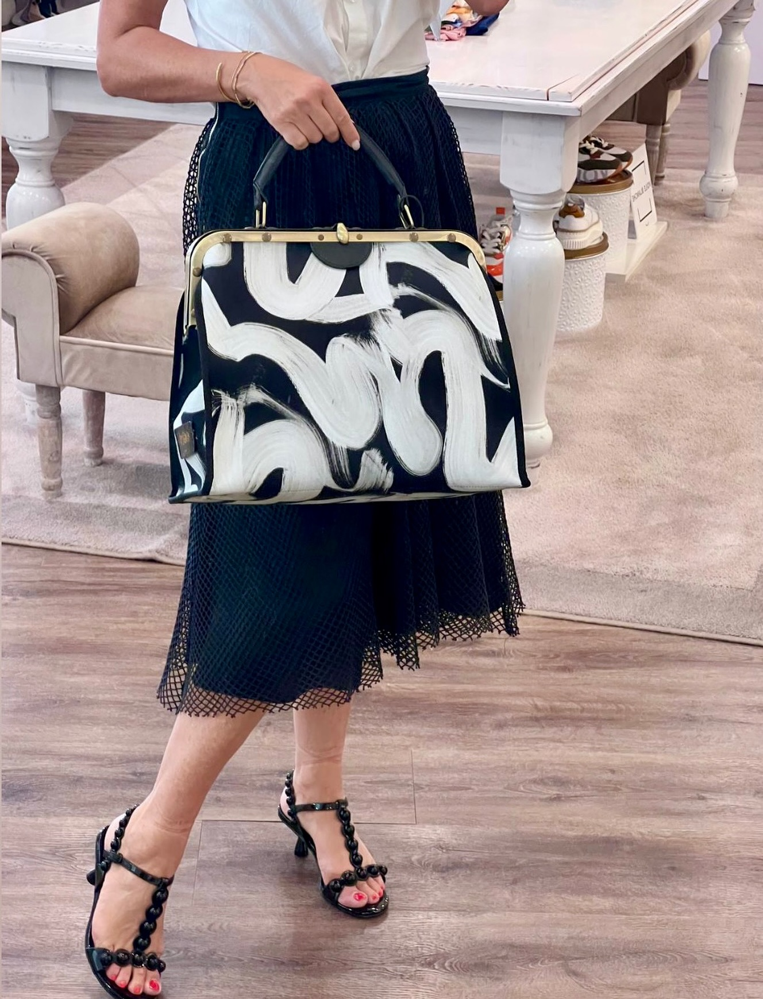
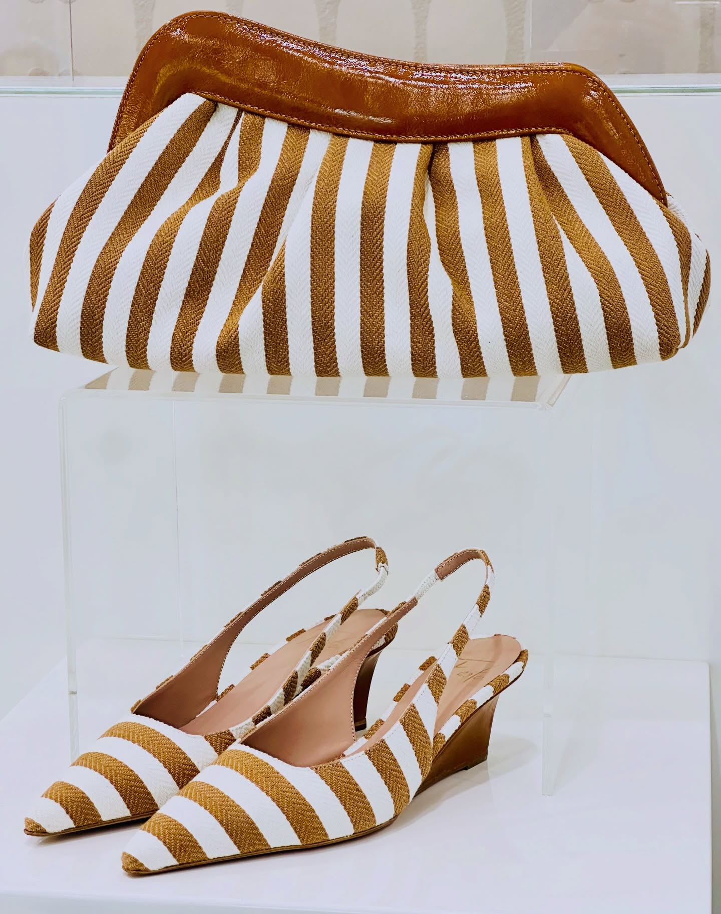
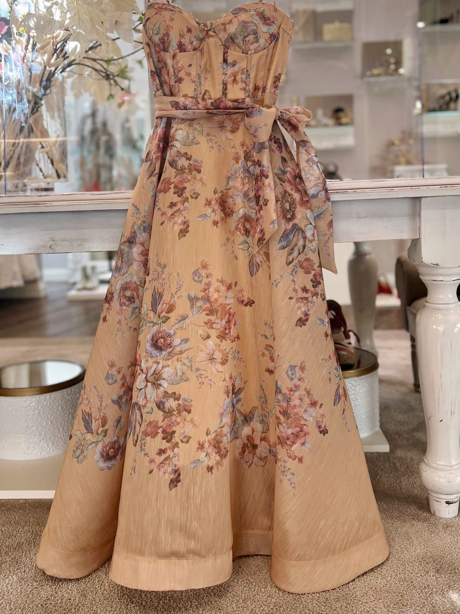
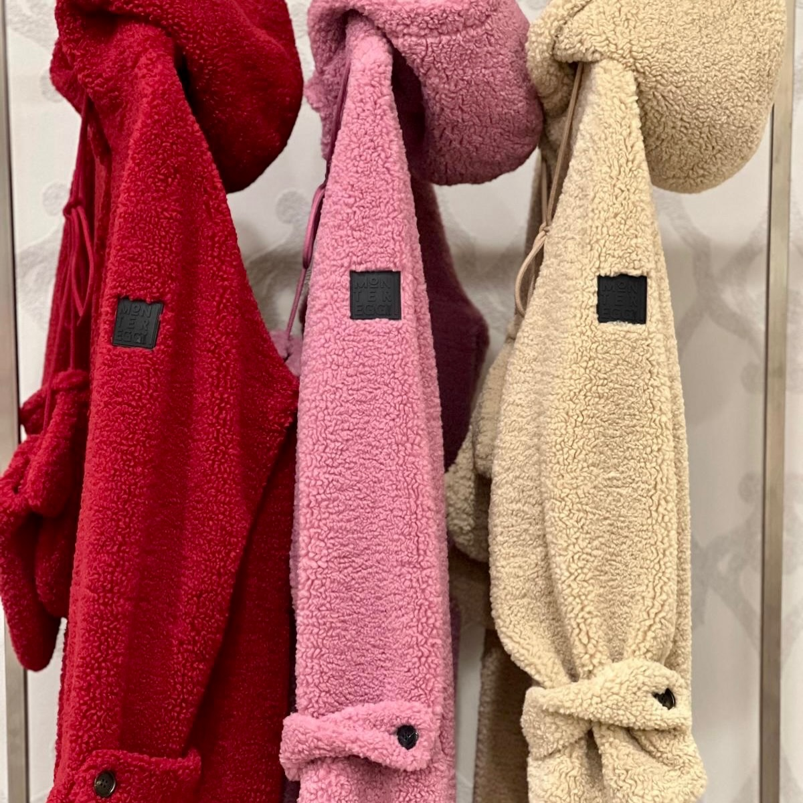
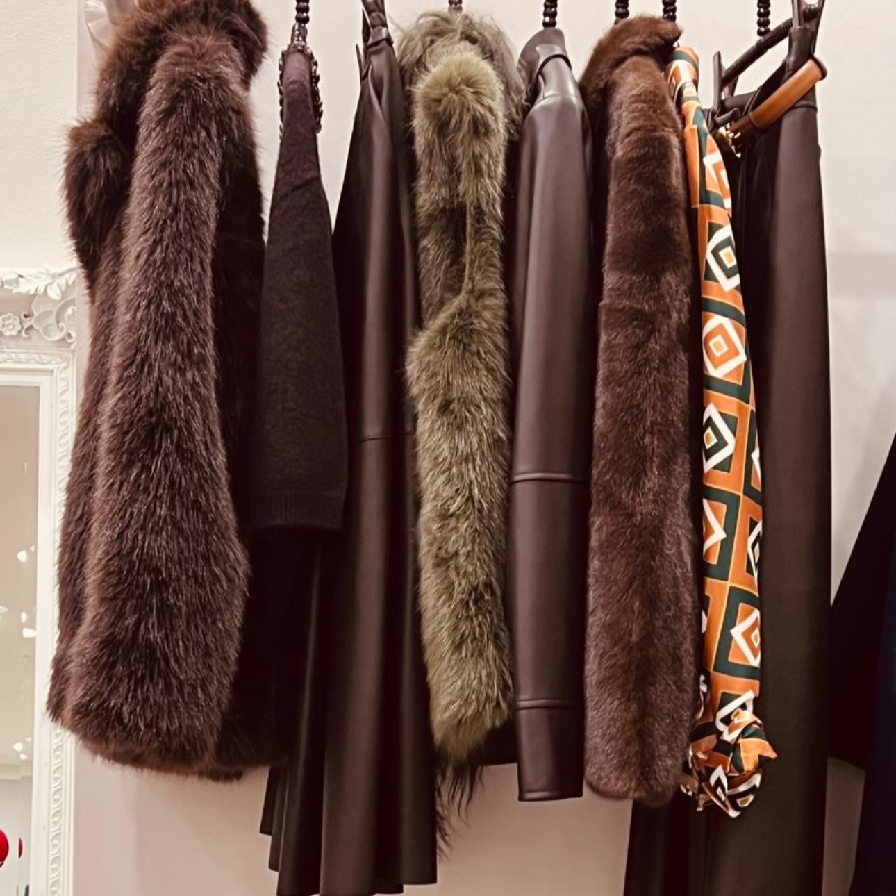
Il dettaglio che cambia tutto
Bijoux, foulard e piccoli accessori per finire ogni look.
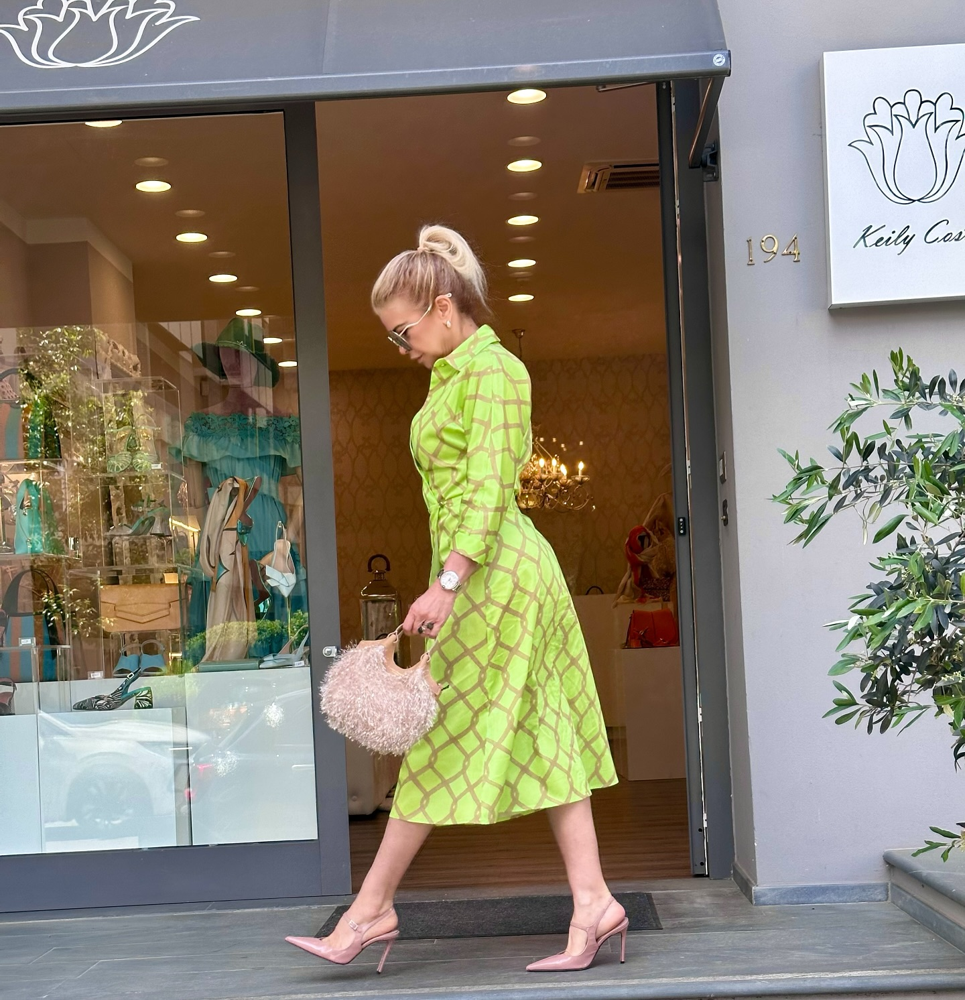
Il locale
Uno spazio raccolto e luminoso, pensato come un salotto: arredi bianchi, dettagli dorati e una vetrina che cambia con le stagioni. Il posto giusto per prendersi del tempo.
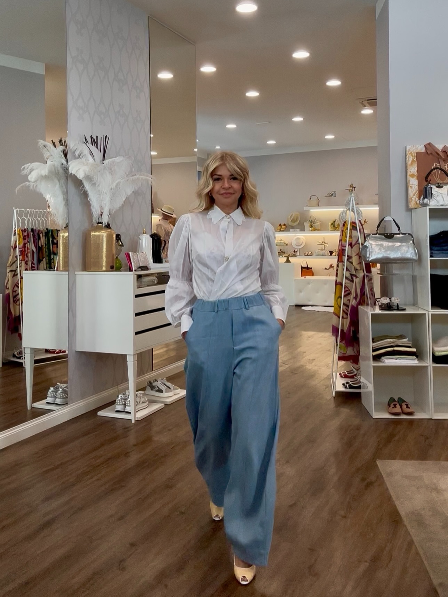
La storia
Dietro ogni scelta c'è Keily: il suo gusto, il suo modo di accostare i pezzi, la sua idea di femminilità. La boutique è, prima di tutto, il suo guardaroba ideale.